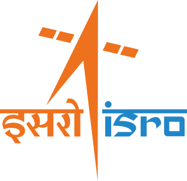
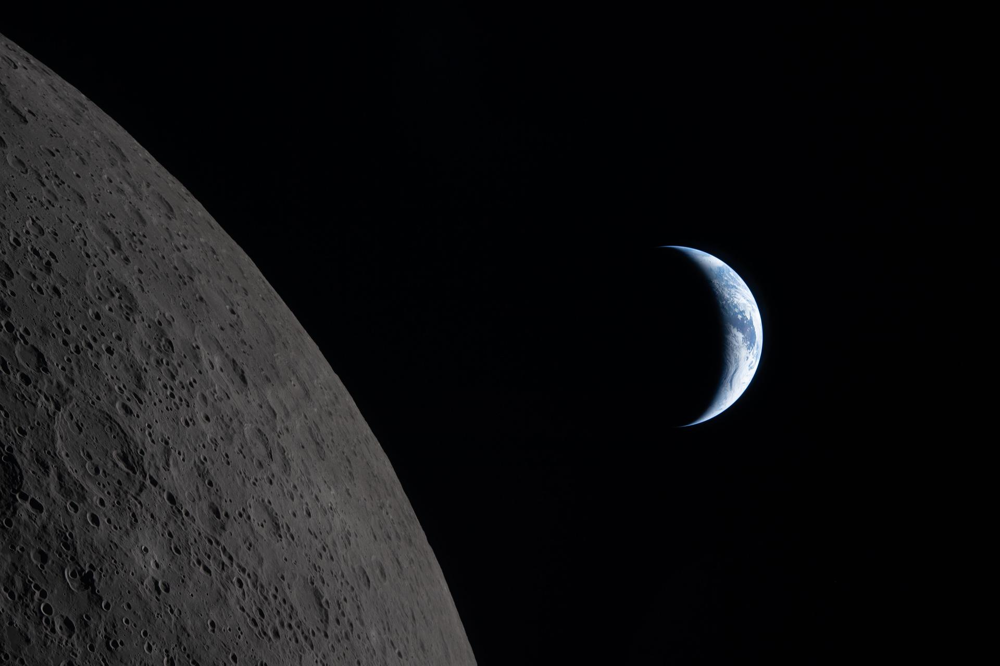

🌌 अंतरिक्ष समाचार | Space News

दिनांक: १०-११-२०२६ • Date: 10-11-2026 • Time: 14:11 IST • 12 Updates
Reviewer Access

ISRO's LPSC to hold pension adalat on November 19 Deccan Herald
NRSC allocates N$2.8m to regional road safety forums New Era
L&T’s Coimbatore facility delivers fourth crew escape shroud set for Gaganyaan-2 mission The Times of India

Read this release in English here.La NASA busca a los exploradores que ayudarán a escribir el próximo capítulo de los vuelos espaciales tripulados. Ya está abierto el plazo de inscripción para la próxima promoción de astronautas de la agencia, que se incorporarán a la NASA en un momento en el que Estados Unidos regresa a […]

Using NASA’s Chandra X-ray Observatory, astronomers have discovered what is triggering repeated outbursts from a giant, unstable star. A new study, published Monday in the latest issue of The Astrophysical Journal, details the discovery of a previously hidden companion object that keeps pulling material away from the massive star every 113 days as they orbit […]

Mid-power (3-7 kW) Hall effect thruster systems have been identified by government and industry stakeholders as critical capabilities for satellite, defense, and exploration missions. Given the need for this capability, NASA is launching the Advanced Mid-Power Electric Rocket (AMPERE) Challenge. The NASA AMPERE Challenge invites U.S. commercial companies to develop and demonstr...
Read this release in English here.El domingo 8 de noviembre de 2026, la NASA anunció la convocatoria del reto estudiantil Base Lunar, dotado con un millón de dólares, durante un acto de MAX POWER celebrado en el Complejo de Visitantes del Centro Espacial Kennedy, en Florida. En el marco de una edad de oro de […]

New research suggests that Little Red Dots, which have puzzled astronomers since the JWST began discovering them, could host primordial black holes born during the Big Bang.

NASA has officially launched the Moon Base Student Challenge, asking students to help build humanity's future on the moon. And there is $1 million in prizes for the best ideas.

On Saturday (Nov. 7), NASA put out the call for applications for a new class of astronauts. Applications are due by Dec. 3.

The future of flight meets space exploration as a futuristic electric aircraft hovers beside Blue Origin's massive New Glenn rocket stage.